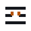
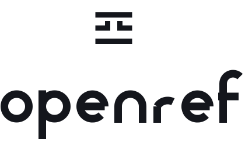

Три строки записи, средняя разомкнута, и пробел ограничен двумя стойками. Это ровно то, что делает движок: если факт нельзя прочитать достоверно, строка остаётся незакрытой и помечается как неизмеренная, а не как чистая. Логика формы держится на одном приёме, поэтому она выживает и на 16 пикселях, и в один цвет.
Файла, который сам подстраивается под тёмную тему, в наборе нет, и это осознанное решение. Медиазапрос внутри SVG не виден, когда файл подключён картинкой: README на GitHub такой запрос не пробрасывает, у фавиконки поведение зависит от браузера. Поэтому цвет зашит в файл литералом, а переключение делает та сторона, которая про тему знает: тег picture в разметке или атрибут media у link. Всего два цвета чернил и два акцента, остальное - пары.
<!-- README на GitHub и npm --> <picture> <source media="(prefers-color-scheme: dark)" srcset="openref-lockup-dark.svg" /> <img src="openref-lockup-light.svg" width="360" alt="openref" /> </picture> <!-- фавиконка --> <link rel="icon" href="openref-favicon-light.svg" type="image/svg+xml" media="(prefers-color-scheme: light)" /> <link rel="icon" href="openref-favicon-dark.svg" type="image/svg+xml" media="(prefers-color-scheme: dark)" /> <!-- в своём интерфейсе: разметка прямо в DOM, цвет наследуется от текста --> <span class="logo"><!-- содержимое openref-mark-inline.svg --></span>





На 16 и 24 пикселях берётся файл favicon: у него своя сетка, штрихи ложатся на целые пиксели и пробел шире. Начиная с 32 пикселей работает основной марк.
| роль | светлый фон | тёмный фон |
|---|---|---|
| чернила | #14161c | #eef1f6 |
| акцент, только стойки пробела | #b45309 | #f0b429 |
Умбра намеренно уведена от красного NestJS, зелёного Swagger и зелёного OpenAPI. В акцентной версии стойки отделены цветом, в версии в один цвет весь марк идёт чернилами: смысл сохраняется, потому что пробел держится геометрией, а не окраской.
| файл | цвет внутри | где брать |
|---|---|---|
openref-mark-light.svgopenref-lockup-light.svgopenref-stack-light.svgopenref-favicon-light.svgopenref-mark-tight-light.svg | чернила #14161c, акцент #b45309, литералом | светлый фон. Основа пары в теге picture и в link с media светлой темы |
openref-mark-dark.svgopenref-lockup-dark.svgopenref-stack-dark.svgopenref-favicon-dark.svgopenref-mark-tight-dark.svg | чернила #eef1f6, акцент #f0b429, литералом | тёмный фон. Вторая половина той же пары |
openref-*-light-mono.svgopenref-*-dark-mono.svg | один цвет, литералом | печать, тиснение, гравировка, чужой интерфейс с одним доступным цветом |
openref-mark-inline.svgopenref-lockup-inline.svg | currentColor | только при вставке разметки прямо в DOM: цвет наследуется от текста и тема решается вашим CSS. В теге img такой файл станет чёрным, это не годится |
Во всех файлах viewBox, растра нет, шрифты не подключаются, надпись в кривых и штрихах, ни градиентов, ни теней, ни фильтров, ни блока style внутри файла.